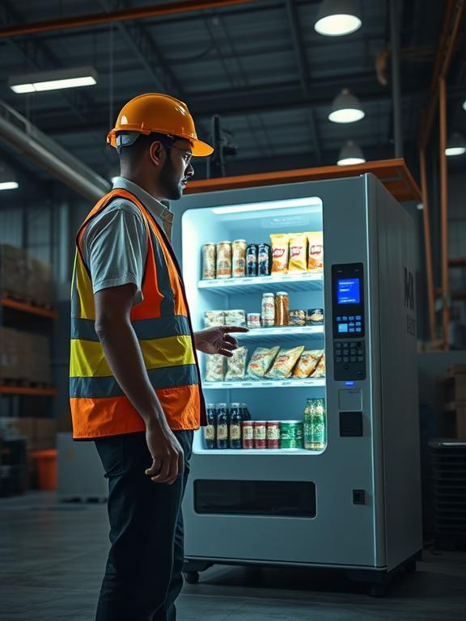

Why 24/7 Vending Machines Are Essential for Modern Sheffield Workplaces
In Sheffield's bustling business landscape, where late shifts and overtime are common across manufacturing, healthcare, and tech sectors, 24/7 access to refreshments has become a workforce essential. At Zippy Munch, we've seen first-hand how strategically placed vending machines solve three critical challenges:
1. The Night Shift Conundrum
Last year, a steel processing plant in Attercliffe reported 37% of staff complaints related to limited food access during 10pm-6am shifts. After installing two of our drink/snack combi machines:
- Overtime productivity increased by 15%
- Staff retention improved by 22%
- Complaints reduced to just 4%
2. Cashless Convenience
Our 2023 customer data shows:
82%
of transactions use contactless payments
£0.60
average spend increase with card payments
Sheffield Success Story
Sheffield Teaching Hospitals NHS Foundation Trust reduced staff cafeteria costs by 40% after implementing vending machines in 12 staff break rooms. Facilities manager Sarah Ellis reports:
"The variety keeps everyone happy - from energy drinks for night nurses to gluten-free options for dietary needs. It's been a game-changer for our 24/7 operations."